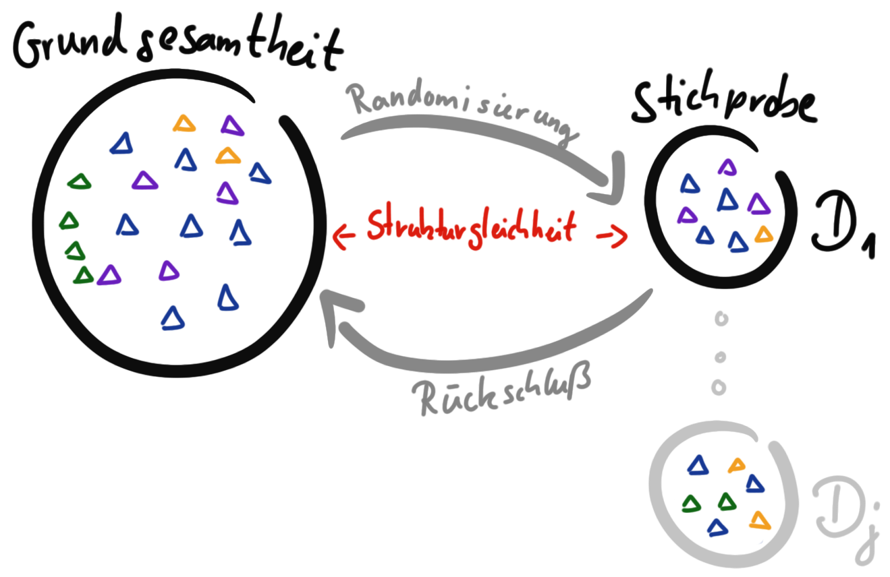

tbl <- tibble(x = rnorm(10000, 0, sqrt(5)),
y = rnorm(10000, 0, sqrt(1)))
cov(tbl) %>%
round(1)
tbl %>%
ggplot(aes(x,y)) +
geom_point() +
ylim(-10, 10) + xlim(-10, 10)
tbl <- tibble(x = rnorm(100000, 0, sqrt(2)),
y = 0 + 2 * x + rnorm(100000, 0, sqrt(1)))
tibble(x = rnorm(1000000, 0, sqrt(5)),
y = 0 + 2 * x + rnorm(100000, 0, sqrt(3))) %>%
cov() %>%
round(1)
cov(tbl) %>%
round(1)
tbl %>%
ggplot(aes(x,y)) +
geom_point() +
ylim(-10, 10) + xlim(-10, 10)Spielecke
Version vom August 09, 2023 um 21:46:50
“Denn, um es endlich auf einmal herauszusagen, der Mensch spielt nur, wo er in voller Bedeutung des Worts Mensch ist, und er ist nur da ganz Mensch, wo er spielt.” — Friedrich Schiller

Das ist hier meine Spielecke, wo ich Ideen und sonst so Zeug sammele, was mir übwer den Weg läuft und ich noch nicht so richtig weiter im Skript eingeordnet habe. Deshalb
Zitate
“If you feel safe in the area that you’re working in, you’re not working in the right area. Always go a little further into the water than you feel you’re capable of being in. Go a little bit out of your depth, and when you don’t feel that your feet are quite touching the bottom, you’re just about in the right place to do something exciting.” – David Bowie
“Curiosity is the beginning of knowledge. Action is the beginning of change.” — James Clear
“All models are approximations. Essentially, all models are wrong, but some are useful. However, the approximate nature of the model must always be borne in mind.” — George E. P. Box
“Wer etwas Großes will, der muß sich, wie Goethe sagt, zu beschränken wissen. Wer dagegen alles will, der will in der Tat nichts und bringt es zu nichts. Es gibt eine Menge interessante Dinge in der Welt; spanische Poesie, Chemie, Politik, Musik, d. ist alles sehr interessant, und man kann es keinem übel nehmen, der sich dafür interessiert; um aber als ein Individuum in einer bestimmten Lage etwas zustande zu bringen, muß man sich an etwas Bestimmtes halten und seine Kraft nicht nach vielen Seite hin zersplittern.” — Georg Wilhelm Friedrich Hegel, deutscher Philosoph
“(1) Alles was es schon gab, als Du geboren wurdest, ist normal und gewöhnlich. Diese Dinge werden als natürlich wahrgenommen und halten die Welt am Laufen. (2) Alles was zwischen Deinem 16ten und 36ten Lebensjahr erfunden wird ist neu, aufregend und revoltionär. Und vermutlich kannst Du in dem Bereich sogar Karriere machen. (3) Alles was nach dem 36ten Lebensjahr erfunden wird ist gegen die natürliche Ordnung der Dinge.” — Douglas Adams, Per Anhalter durch die Galaxis
“You have to be creative to do science. Otherwise you’re just repeating tired old formulas. You arent’t doing anything new.” — Steven Hawking
Links
sjPlot - Data Visualization for Statistics in Social Science
Bilder

Steinbruch alter Ideen
Big Bang Theorie
https://stats.stackexchange.com/questions/555855/why-is-a-regression-coefficient-covariance-variance
https://denninginstitute.com/modules/dau/stat/regression/linregsn/nreg_6_frm.html#:~:text=The%20Regression%20coefficient%20is%20defined,independent%20variable%2C%20x%20or%20y.
https://wiki.pathmind.com/eigenvector
https://stats.stackexchange.com/questions/2691/making-sense-of-principal-component-analysis-eigenvectors-eigenvalues
Data Science
- Real World Data Liu und Panagiotakos (2022)
- Warum Data Science Hariri, Fredericks, und Bowers (2019)
Von den Daten zu Erkenntnis und zurück.
Wahrscheinlichkeitsbegriff sollte dann doch irgendwie bei Bayes mit rein…
“Gott würfelt nicht!” — Albert Einstein
Warum ist es nachts dunkel?
Herschel und die Sonne…
Falsifikationsprinzip
Wie funktioniert ein statistischer Versuch? Ich könnte auch wissenschaftliches Experiment schreiben, aber ein wissenschaftliches Experiment ist sehr abstrakt. Wir wollen ja einen Versuch durchführen und danach - ja was eigentlich? Was wollen wir nach dem Versuch haben? Meistens eine neue Erkenntnis. Um diese Erkenntnis zu validieren oder aber abzusichern nutzen wir Statistik. Dazu musst du noch wissen, dass wir eine spezielle Form der Statistik nutzen: die frequentistische Statistik.
Eine biologische Wiederholung beinhaltet ein neues Tier, Pflanze oder Mensch. Eine technische Wiederholung ist die gleiche Messung an dem gleichen Tier, Pflanze oder Mensch.
Wir nennen das Outcome auch Endpunkt, Response oder kurz \(y\).
Die frequentistische Statistik basiert - wie der Name andeutet - auf Wiederholungen in einem Versuch. Daher der Name frequentistisch. Also eine Frequenz von Beobachtungen. Ist ein wenig gewollt, aber daran gewöhnen wir uns schon mal. Konkret, ein Experiment welches wir frequentistisch Auswerten wollen besteht immer aus biologischen Wiederholungen. Wir müssen also ein Experiment planen in dem wir wiederholt ein Outcome an vielen Tieren, Pflanzen oder Menschen messen. Auf das Outcome gehen wir noch später ein. Im Weiteren konzentrieren wir uns hier auf die parametrische Statistik. Die parametrische Statistik beschäftigt sich mit Parametern von Verteilungen.
Wie gehen wir nun vor, wenn wir ein Experiment durchführen wollen?
- Wir müssen auf jeden Fall wiederholt ein Outcome an verschiedenen Tieren, Pflanzen oder Menschen messen.
- Wir überlegen uns aus welcher Verteilungsfamilie unser Outcome stammt, damit wir dann die entsprechende Verfahren zur Analyse nehmen können.
Wenn wir nun ein Experiment durchführen dann erheben wir einmalig Daten \(D_1\). Wir könnten das Experiment wiederholen und erneut Daten \(D_2\) erheben. Wir können das Experiment \(j\)-mal wiederholen und haben dann Daten von \(D_1,..., D_j\). Dennoch werden wir nie alle Daten erheben können, die mit einem Experiment verbunden sind.
Strukturgleichkeit erreichen wir durch Randomisierung.
Nehmen wir das Beispiel, dass wir die Sprungweite von Hunde- und Katzenflöhen vergleichen wollen. Wir können nicht alle Hunde- und Katzenflöhe messen. Wir können nur eine Stichprobe an Daten \(D_1\) erheben. Über diese Daten \(D_1\) können wir dann später durch statistische Algorithmen eine Aussage treffen. Wichtig ist hier sich zu merken, dass wir eine Grundgesamtheit haben aus der wir eine Stichprobe ziehen. Wir müssen darauf achten, dass die Stichprobe repräsentativ ist und damit strukturgleich zur Grundgesamtheit ist. Die Strukturgleichkeit erreichen wir durch Randomisierung. Wir veranschaulichen diesen Zusammenhang in Abbildung 3. Ein Rückschluß von der Stichprobe ist nur möglich, wenn die Stichprobe die Grundgesamtheit repräsentiert. Auch eine Randomisierung mag dieses Ziel nicht immer erreichen. Im Beispiel der Hundeflöhe könnte wir eine Art an Flöhen übersehen und diese Flohart nicht mit in die Stichprobe aufnehmen. Ein Rückschluß auf diese Flohart wäre dann mit unserem Experiment nicht möglich.

Tabelle 1 zeigt nochmal die Zusammenfassung von der Grundgesamtheit un der Stichprobe im Vergleich. Wichtig ist zu merken, dass wir mit unserem kleinen Experiment Daten \(D\) generieren mit denen wir einen Rückschluß und somit eine Verallgemeinerung erreichen wollen.
| Grundgesamtheit | Stichprobe |
|---|---|
| … \(n\) ist riesig bis unfassbar. | … \(n_1\) von \(D_1\) ist klein. |
| … der Mittelwert wird mit \(\mu_y\) beschrieben. | … der Mittelwert wird mit \(\bar{y}\) beschrieben. |
| … die Varianz wird mit \(\sigma^2\) beschrieben. | … die Varianz wird mit \(s^2\) beschrieben. |
| … die Standardabweichung wird mit \(\sigma\) beschrieben. | … die Standardabweichung wird mit \(s\) beschrieben. |
Hariri, Reihaneh H, Erik M Fredericks, und Kate M Bowers. 2019. „Uncertainty in big data analytics: survey, opportunities, and challenges“. Journal of Big Data 6 (1): 1–16.
Liu, Fang, und Demosthenes Panagiotakos. 2022. „Real-world data: a brief review of the methods, applications, challenges and opportunities“. BMC Medical Research Methodology 22 (1): 287.